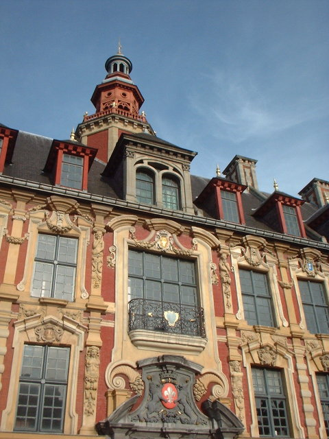
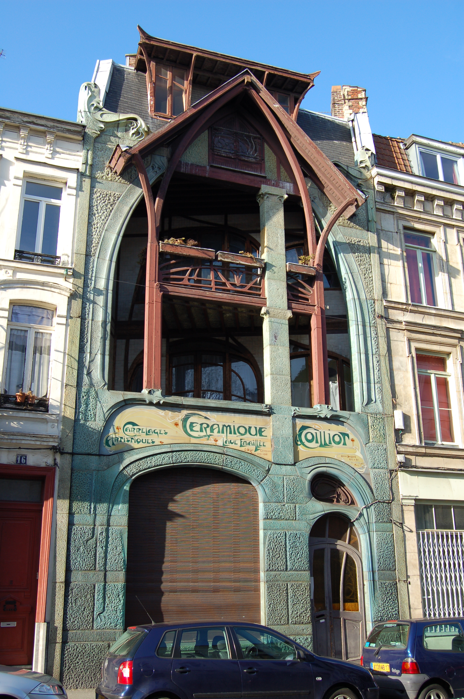

CityLoop Quest Lille


L’architecture lilloise se reconnaît d’abord à sa brique, à ses pignons, à ses couleurs chaudes et à son goût du détail. Dans le Vieux-Lille, les façades mêlent influences flamandes, vocabulaire classique et décors sculptés. La pierre n’efface pas la brique : elle l’encadre, la souligne, la met en scène. Cette combinaison donne au centre ancien une atmosphère à la fois élégante et familière, très différente de celle des villes entièrement construites en pierre blanche.
La Vieille Bourse est l’un des meilleurs exemples de cette richesse. Construite au XVIIe siècle, elle associe fonction commerciale et décor abondant : colonnes, guirlandes, cartouches, figures, couleurs, cour intérieure. Elle rappelle que l’architecture n’était pas seulement faite pour abriter, mais aussi pour affirmer une prospérité. Le commerce devient spectacle, et la façade parle autant que les transactions qui s’y déroulaient.

Lille possède aussi une architecture de pouvoir. La Porte de Paris marque l’entrée dans la ville française de Louis XIV ; la citadelle montre la précision militaire de Vauban ; le beffroi de l’Hôtel de Ville, plus tardif, traduit l’ambition municipale du XXe siècle. Entre ces repères, l’Opéra, la Chambre de commerce et les grands immeubles du centre racontent une ville fière de son rôle régional et économique.

L’architecture industrielle forme une autre couche essentielle. Usines, entrepôts, filatures et bâtiments de services ont longtemps façonné Lille et sa métropole. Beaucoup ont été transformés en lieux culturels, bureaux, logements ou espaces universitaires. Cette reconversion est un élément fort du paysage contemporain : elle permet de garder les volumes, les matériaux et la mémoire du travail tout en inventant de nouveaux usages.

Pour profiter pleinement de votre promenade, levez les yeux. Cherchez les ancres métalliques, les dates inscrites, les enseignes anciennes, les reliefs sculptés, les alternances de brique et de pierre, les toitures et les détails autour des fenêtres. Lille récompense les visiteurs attentifs : son architecture n’est pas seulement monumentale, elle est aussi faite de petites surprises dispersées dans les rues.
Cette diversité architecturale rend Lille passionnante pour une promenade lente. La ville n’impose pas un seul style : elle juxtapose le décor marchand, la fortification royale, l’héritage industriel, l’Art nouveau et les grands gestes du XXe siècle. L’œil peut passer d’un cartouche sculpté à une cheminée d’usine, d’un pignon flamand à une façade moderniste. C’est dans ces contrastes que l’architecture lilloise devient lisible. Pour comprendre cette architecture, ne cherchez pas seulement les monuments les plus photographiés. Regardez les maisons ordinaires : l’alignement des fenêtres, la couleur des joints, les ferronneries, les enseignes anciennes, les angles de rues, les dates gravées, les traces de reconversion. Lille possède un art du détail qui se révèle mieux à vitesse lente qu’en panorama rapide. La Vieille Bourse fascine par l’abondance de son décor, mais une simple façade de brique peut aussi raconter une histoire de commerce, de statut social ou d’adaptation au climat. De même, les bâtiments industriels reconvertis ne sont pas des ruptures : ils prolongent la mémoire du travail dans de nouveaux usages. Entre la citadelle de Vauban, la Maison Coilliot, le beffroi municipal et les quartiers de brique, la ville invite à comparer les fonctions : vendre, défendre, habiter, produire, représenter. C’est cette diversité de fonctions qui donne sa profondeur au paysage bâti. La comparaison avec Roubaix, Tourcoing ou la métropole voisine enrichit encore cette lecture. Lille concentre les signes du pouvoir et du commerce, tandis que l’ensemble métropolitain rappelle la puissance textile, les cités ouvrières, les villas patronales et les reconversions culturelles. Même dans le centre, cette histoire élargie reste présente par les matériaux, les volumes et les usages. Regardez enfin comment les restaurations récentes mettent en valeur ce patrimoine sans toujours le figer. Une façade nettoyée, une ancienne halle transformée, un détail conservé dans un bâtiment contemporain montrent que l’architecture lilloise continue à produire de nouveaux usages.